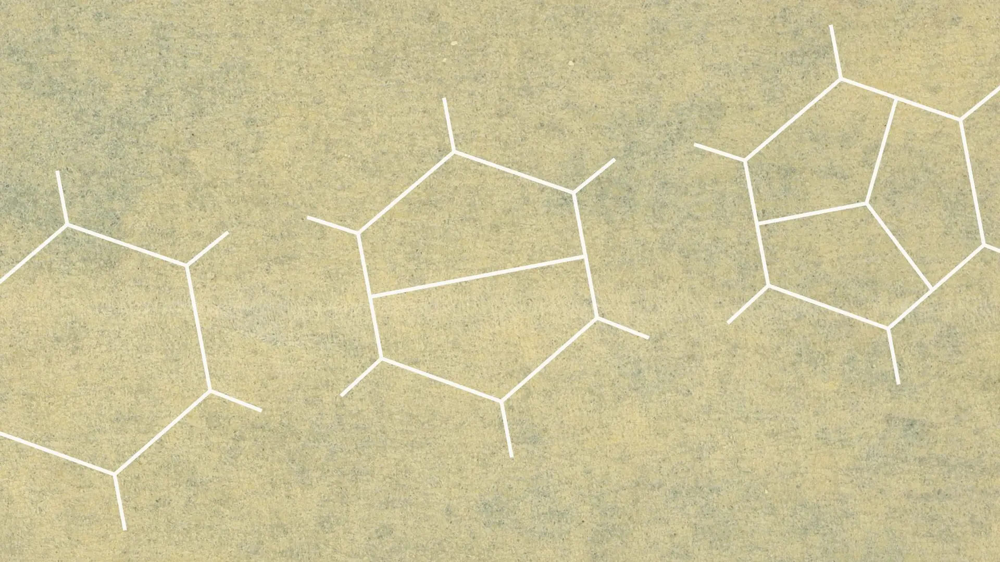
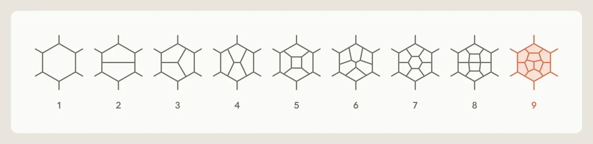

科学（Science） 2026 年 9 月 25 日

已发布 2026 年 9 月 25 日 团队 科学 主题在这篇客座文章中，物理学家兼科学作家Matt von Hippel讲述了他就自己曾从事的理论物理分支中的一个问题向AI公司发起挑战之后发生的事。 相关文章 * 科学 2026 年 11 月 6 日 教AI构建科学模型

发出挑战，一个月后就看到它被攻破，这种事并不常见。但我们正处在一个不同寻常的时代。 先自我介绍一下：我是Matt von Hippel。我曾是理论物理学家，如今是科学作家。自始至终我都在写博客，每周在4gravitons.com上写物理以及研究物理的人。 写物理博客越来越多地意味着写AI博客。这有个问题，因为我显然不是AI专家。涉猎过一点，没错，大概比你的奶奶懂得多些。但多数时候我只能退到一旁，信赖专家。而令人沮丧的是，专家们意见相左！我听过一些聪明且见多识广的人确信AI距超级智能只有几年之遥，而超级智能将能做出真正可怕的事。我也听过另一些同样聪明、同样见多识广的人同样确信，基于LLM的AI已接近天花板，像Claude这样的模型连在物理上做出像样的工作都做不到，更别提征服世界了。 我一直不愿自己下预测。在形成看法之前，我想先看到一个LLM在熟悉的题目上取得进展——那是我知道很难做的题目，因为我自己尝试过类似的事。 除此之外，我还想看到一个LLM做成一件我预期在_计算上_很难的事。LLM在数学上的进展当然令人瞩目，光是这个月就可能改变了很多人的看法。但数学的进展来自新想法，而想法是神秘的东西：在找到之前，你永远不太知道它有多难找。计算给人的感觉更扎实。我想看到一个LLM去攻克那样一道挑战：它看似遥不可及，不是因为研究者原则上不知道怎么做，而是因为做起来似乎需要比研究者所能合理获取的更多的计算机和时间。我想看看这些研究者是不是错了：一个更聪明的人工研究者能否用同样的计算机，照样把问题解决。 于是，我发起了一项挑战:「如果AI公司想让我这样的人刮目相看（或者说吓到我们），就得啃下我的老本行。请证明AI能用一位学者可获得的那种计算资源，解决散射振幅领域某个悬而未决的大问题；请证明一个人人以为会构成障碍的计算极限其实无关紧要。给我们N=8 supergravity到七圈，或者N=4 super Yang-Mills到九圈。」 简言之：AI能否解决我曾从事的理论粒子物理分支里的前沿问题？而且能否在有限预算下做到？
我的老本行是理论粒子物理的一个分支，叫振幅学（amplitudeology）。别的粒子物理学家预言新粒子时，会确保自己能算出检验这些预言所需的计算。他们计算一种叫散射振幅的公式，物理学家借此用亚原子粒子的动量和能量算出它们以特定方式发生反应的概率。如果物理学家能对这些反应作出更精确的预言，就能检验大型强子对撞机之类的实验结果是否与预言相符。一旦不符，便可能是新理论的证据，而新理论或许能解释物理学中一些悬而未决的大谜团，比如暗物质的本质，或宇宙中物质与反物质的平衡。 这些散射振幅公式极难计算，难到物理学家几乎总要用近似。他们做部分计算，在特定的「圈」数处截断——「圈」衡量的是允许粒子间相互作用变得多复杂。计算里纳入的「圈」越多，就越接近真实答案，而计算量也越庞大。 实践中，大多数散射振幅公式只算到两圈。少数算到了三圈。你或许听说过的粒子物理中最精确的预言用了五圈。
振幅学家想做得更好。他们开发实验性的新技术，并在特殊的「玩具模型」理论上加以检验。与其用真实世界中更难对付的粒子，不如先在计算更轻松的玩具模型上试用技术，这样振幅学家就能对新方法做压力测试，看看它们能走多远。 我为其中两个玩具模型发布了挑战。Anthropic的人选择攻克的，是把一个叫N=4 super Yang-Mills的特定玩具模型理论算到九圈。 「Yang-Mills」是一类理论的技术名称，它解释了我们周围世界的大部分现象。自然界的四种基本力中有三种——电磁力、把原子核束缚在一起的强核力，以及导致香蕉之类物体发生放射性衰变的弱核力——都是Yang-Mills理论。 「N=4 super」来自超对称。物理学家曾推测每个粒子都有一个「超对称伙伴」：一个电荷相同、类型不同的粒子，把电子这样的物质粒子与光子这样的力粒子配对。他们一度乐观地认为，这些粒子可以通过更熟悉粒子的尚未被发现的伙伴来解释暗物质。那些推测用的是「N=1」超对称。而在「N=4」中，每个粒子有_四个_超对称伙伴，而不止一个。 粒子如此过剩，使这个理论非常不真实。N=4 super Yang-Mills并不被用来解释暗物质，也不被用来解释现实世界中的任何东西。相反，振幅学家用它来磨炼技术，因为N=4反常地更易于计算。不同粒子之间的精妙平衡意味着只需要某些特定的变量组合，从而简化了计算。 我读博士时参与计算了一个三圈振幅，后来见到了七圈，之后就渐渐力不从心了。SLAC国家加速器实验室的教授Lance Dixon是最早从事这一方向的人之一，几年前他做到了八圈。 这些计算用的是一种叫自举（bootstrap）的实验性技术，结果它出奇地适合AI使用。要自举一个振幅，你不必把每一种可能的粒子相互作用都考虑进来。你只需大致知道答案该长什么样，用一套专门的字母表把所有可能性记在计算机文件里。然后开始逐条核对你已知的一切：其他计算技术给出的预言、答案必须服从的规则、与那些更容易求出答案的相关问题的联系。这有点像数独：先从一个填满所有可能数字的网格开始，边做边划掉。最后你希望发现只有一种可能满足所有检验，同时还剩下足够多的检验来确认自己没犯错。 这意味着Lance早已做好准备，可以检验别人递给他的下一个振幅公式——九圈的那个。那会是个有意思的答案，不仅是对自举技术的一次验证，也是具有如此多圈复杂度的一个罕见振幅实例，本身就值得研究。 但他没算出来，领域里也没有别人算出来。他找到八圈答案的方式已经有些间接：借助与另一个不同但相关的公式——叫形状因子（form-factor），一种涉及不同粒子的部分振幅，结果算起来稍容易些——之间的意外联系。他原本预计下一圈要更间接地找到，甚至可能靠另一种AI方法。如果人们以为只要把惯常的自举方法多跑一圈就行，早就有人做了。
显然，Anthropic有人读我的博客。 八月底，Anthropic的两位物理学家Liam Fitzpatrick和Siddharth Mishra-Sharma联系我，说他们攻克了我帖子里的其中一项挑战。在与Lance核实结果之后，他们向我详细讲了整个过程。 本着挑战的精神，他们并没有动用价值数百万美元的计算能力。他们用的是Fable 5.1，在Claude Science中工作——这是一个科学家付费使用的平台。Claude Science就是业内所说的「脚手架」（harness）：一个用结构化规则和提示词来调用Claude LLM，以获得更稳健、在科学上更有用的行为的程序。 据说，在问过Claude它最有可能攻克哪个问题之后，他们给了一个很简单的提示： 「要解决的问题是计算planar N=4 SYM中九圈的六粒子（六边形）振幅。」 从那以后，他们只是不断叫它继续，配上这样的话： 「我要去睡觉了，接下来几个小时都不在。一直做下去，直到我叫你停。每4到6小时给我一次进度更新。」 Claude最终用两种不同方式完成了计算：原始的自举法，以及间接的形状因子法。两种方式对终端用户来说都大约要花一两千美元，主要开销来自让Claude运行这么久。其中自举计算用Python编程语言配合SymPy包完成，只花了预算中约100美元，相当于让96个CPU跑一周。 十年前我做这类工作时，让96个CPU跑一周也许会觉得很多，但如今只要有正当理由，这相当负担得起。 结果证明，这个结果对人类而言也并不那么遥远。收到Anthropic消息几天后，我们收到了北京中国科学院振幅学家何颂的消息。何颂的团队已经得到了结果的大部分。他们用了一些基于GPT-6的AI辅助，但不是Anthropic所用的那种几乎无人工介入的一次性方式。 这里的各方都很友善，这让人略感宽慰。人类一方——Lance、何颂及其合作者——将得以发表结果，花时间解释并分析它们，以裨益后来的研究者。Claude的角色到此为止，暂时如此。
我发起挑战，是想更好地把握当前AI能做什么、以及从这里能走向何方。那么我学到了什么？ 我原以为这或许是个机会，能看到AI以出人意料的方式突破一道计算壁垒。结果它做的事，后来证明人类也能做到。Claude用的是已知方法，只是比人们此前尝试投入的算力多了一些。它可能因为用了Python、而没用Maple（Lance最喜欢的数学程序）或Mathematica（我最喜欢的）而占了便宜，也可能用了比我们好得多的软件工程实践，但都谈不上超级智能。 我最大的收获是，外面的低垂果实比你想的要多。即便目标简单而明确，有时在专家眼里看起来也远比实际更难达成。有些计算机科学背景的人多年来一直告诉我，振幅学家只要雇几个程序员就能取得大得多的进展。他们现在该觉得被证明是对的。 同样值得注意的是，Claude Science一次性就完成了这件事，除了「继续」之外没有任何更精细的科学监督。这类计算挑剔又杂乱。如果我拿96个CPU用一周时间做这种计算，几乎肯定最后要花两周：第一遍几乎保准会把某处搞砸。我不知道Claude途中内部犯了多少错，但那套脚手架在没有外部合作者输入的情况下把它带到了终点。事到如今，我不确定这还让不让我惊讶。但如果你因为仍觉得AI错误太多、不堪使用而不知道它能做到这些，那这就是你该带走的结论：它现在能可靠地做这类事了。 事情显然在快速推进。今年三月，AI完成物理项目时还像个学生：规模较小的任务，需要大量手把手指导，还常出错。相比之下，这是一次真正的前沿计算，通常只有振幅领域的顶尖专家才会去碰。虽然有可能这只是一个对AI友好得多的问题，但我认为不止如此：我觉得这项技术确实变强了。 我能把它推广到多大范围？这我并不确定。 这些玩具模型理论往往只是小分支社群的关注点。现实世界的振幅计算是个更广的领域，许多团队竞相冲向前沿。那里的低垂果实可能更少，但我不会指望如此。我知道做那些计算的人已经越来越多地用AI写代码。如果人们还没去检验AI科学脚手架能否在那里一次性完成前沿计算，他们该去检验（而且该有个核验结果的方案）。若在合理预算内还能再挤出一圈，我一点也不会太惊讶。 接下来就成了一个供学界讨论的问题：新的前沿在哪里，下一步需要弄清什么？与数学中的许多问题不同，振幅不只是新方法的练兵场。它有一个目标：把预言做到足够精确，以便与即将开展的实验比对。这个领域离那个目标又近了多少？ 不过，往更宽处说，我其实并没有得到答案。 我带着好奇开始这件事，不只是想知道AI如今在研究中能做什么，也想了解未来。当你读LLM时代之前关于超级智能的预测时，它们常提出些看似天方夜谭的风险。人们想象AI能模拟人、预测其反应并加以操纵，或者从第一性原理出发想出如何造出灭绝物种的病毒、吞噬世界的纳米技术。而对这些风险的常见反驳是：它们把智能——新想法那含混而神秘的源泉——与算力混为一谈。批评者主张，即便新建一大批数据中心，也不具备完成上述任何任务的算力，那些只是短期内不会到来的科幻未来里的噩梦。 我不觉得自己对这些批评者有了更好的回答。我稍稍了解了AI如今能做什么：它能在合理预算下在我的老本行里做出有意义的工作，而且还相当自主。但我原本盼着看到更奇特的东西，看到计算本身的新方法带着出乎意料的力量。我原本盼着瞥见未来，好让我在关于超级智能的争论里有个有依据的看法。我想知道AI能把计算极限推到多远……而我感觉在这里学到的只是：我对极限究竟在哪里，太过天真了。
作者Lance Dixon，SLAC国家加速器实验室与斯坦福大学粒子物理与天体物理教授，他核验了Claude的九圈结果。 我认识的大多数理论物理学家都意识到，当前这个大语言模型的时代将彻底改变我们思考物理的方式。问题只在于：它究竟何时才会真正落到自己头上？对我来说，那是9月1日——Anthropic的Liam Fitzpatrick和Siddharth Mishra-Sharma告诉我，Claude已经算出了planar N=4 super Yang-Mills中九圈的MHV六粒子振幅，并请我核验结果。 我不打算解释上一句里的所有术语；Matt已在上面交代了背景。我确实得提一下，其实有两个相关的对象：「振幅」，以及我们称之为「形状因子」的东西。各自都有对应的圈数：一圈、两圈、三圈，依此类推。即便找出许多让事情变容易的技巧，每一圈阶在计算上都比前一圈更难。此外，同一圈阶下形状因子比振幅容易。2023年，Andy Liu和我展示了如何利用形状因子以及一种我们称为对映对偶（antipodal duality）的奇特对称性，得到八圈的振幅。 自2023年以来，我和合作者一直盯着九圈：先做形状因子，再做振幅，用的都是我们2023年的想法。我原以为直接算振幅太难了。所以Claude能直接做到，确实让我印象很深。倒不全因为这是一项庞大的计算任务，而是因为整套构造极其脆弱：计算流程里只要出一点点错，就会像失败的舒芙蕾一样整个塌下来，只剩你纳闷哪里出了问题（然后去调试）。而且构造中的许多细节琐碎到不值得在论文里完整记录。因此Claude不得不从零写出所有这些代码。 从九圈振幅反推回形状因子相对容易，我核验结果也主要走的是这条路。这意味着过去两周我一直在核验一个结果——九圈形状因子——而我们团队为此已努力了好几年。并且，一台机器解决了一个我原以为难到无法直接攻克的题目。这让我个人困扰吗？是否令人灵魂受挫？ 不，有两个理由。一是我们团队早已在推进用定制的Transformer模型预测更高圈数，我们口号的一部分是：「我们拥有核验机器给出的任何候选解所需的全部工具。」Claude是另一种Transformer模型，大概比我们定制的那个大上一百万倍。不过话说回来，我们确实说过能核验AI模型给出的任何结果，所以能够也应当去做。第二个理由是，若看Claude如何解题，它用上了我和合作者多年来开发的所有方法，并且（也许是照顾我们）用我们早已定好的格式呈现了解答。所以在我核验Claude结果的同时，Claude也在核验我们此前全部的工作。事实上我敢说，除了我的合著者之外，Claude比任何人都更懂我们2019年和2023年的论文。 写完这段之后，何颂告诉我，他的团队也计算了九圈振幅中称为symbol的那一块。（不知为何，人们似乎就爱跟我讲他们的九圈成果。）何颂的团队用AI（GPT-6）帮他们算了一些约束条件，但没有用于整体框架。于是两周之内，我先被一台机器抢了先，又被「人类加机器」抢了先。 回到Claude的计算：在我看来，一个大语言模型能执行完我们列出的复杂流程中的所有步骤，并组织起这些计算马力，是相当了不起的成就。但更令人扪心自省的时刻，会等到大语言模型开始先于人类提出新的物理原理与洞见时才到来。
Anthropic邀请Matt von Hippel撰写本文，并为他付出的时间支付了报酬。Anthropic员工对草稿提供了反馈；内容与观点均属他本人。Lance Dixon独立核验了结果，并获得了Claude使用额度。
Published Sep 25, 2026 Team Science Topics
In this guest post, physicist and science writer Matt von Hippel shares what happened when he issued a challenge to AI companies regarding a problem in his former subfield of theoretical physics. Related articles * Science Nov 6, 2026 Teaching AI to build scientific models
View more It’s not often that you issue a challenge, only to see it beaten a month later. But we’re living in unusual times. Let me introduce myself: I’m Matt von Hippel. I used to be a theoretical physicist; these days I’m a science writer. Throughout, I’ve been a blogger, writing weekly at 4gravitons.com about physics and the people who do it. More and more, blogging about physics has meant blogging about AI. That’s a problem, because I’m definitely not an AI expert. I’ve dabbled in it, sure. I probably know more than your grandma. But I mostly have to step back and trust the experts. And frustratingly, the experts disagree! I’ve heard from smart, well-informed people who are confident that AI is a few years away from superintelligence, and that superintelligence will be capable of truly terrifying things. And I’ve heard from smart, well-informed people who are equally confident that LLM-based AI is close to a ceiling, that models like Claude won’t even be able to do impressive work in physics, let alone conquer the world. I’ve been reluctant to make my own predictions. Before forming an opinion, I wanted to see an LLM make progress on something familiar, something I knew was hard to do because I’d tried to do something similar myself. In addition to that, I wanted to see an LLM do something that I expected to be computationally hard. LLMs have made impressive strides in math, certainly, and this month alone has likely changed many people's minds. But progress in math comes from new ideas, and ideas are mysterious things: one never quite knows how hard they are to find until they’re found. Computation felt more solid. I wanted to see an LLM tackle a challenge that seemed out of reach not because researchers didn’t know how to do it in principle, but because doing it seemed like the kind of thing that would take more computers and time than the researchers reasonably had access to. I wanted to see if those researchers were wrong: if a smarter, artificial researcher could use the same computers, and solve the problem anyway. So, I issued a challenge:
“If AI companies want to impress people like me (or scare us, for that matter), then they need to tackle my old field. Show that an AI can take the kinds of computer resources an academic has access to, and solve one of the scattering amplitudes field’s big outstanding problems. Show that a computational limit everyone expected to be a problem doesn’t actually matter. Give us N=8 supergravity to seven loops, or N=4 super Yang-Mills to nine loops.” In short: can AI solve a frontier problem in my former subfield of theoretical particle physics? And can it do it on a budget?
My old field is a branch of theoretical particle physics called amplitudeology. When other particle physicists predict new particles, they make sure they can do the calculations to test those predictions. They compute formulas called scattering amplitudes, which let physicists use the momenta and energies of subatomic particles to calculate how likely they are to react in particular ways. If physicists can make more accurate predictions for these reactions, they can check whether results from experiments like the Large Hadron Collider match those predictions. A mismatch could be evidence for a new theory, one that could explain some of physics’ big lingering mysteries, like the nature of dark matter, or the balance between matter and antimatter in the universe. These scattering amplitude formulas are hard to compute, so hard that physicists almost always use approximations. They do partial calculations, cut off at a specific number of “loops,” a measure of how complicated interactions between particles are allowed to get. The more “loops” they include in their calculations, the closer they get to the real answer, and the harder, computationally, the calculation is to do. In practice, most scattering amplitude formulas have only been calculated to two loops. A few have three. The most precise prediction in particle physics you might have heard of used five.
Amplitudeologists want to do better. They develop experimental new techniques, and test them on special “toy model” theories. By trying the technique with a toy model where the calculation is easier, rather than the more challenging particles of the real world, amplitudeologists can stress-test the new methods and see how far they can go. I posted challenges for two of those toy models. The one the folks at Anthropic chose to tackle was to go up to nine loops with a particular toy model theory, called N=4 super Yang-Mills. “Yang-Mills” is a technical name for a type of theory that explains most of the world around us. Three of the four fundamental forces of nature: electromagnetism, the strong nuclear force that holds the nuclei of atoms together, and the weak nuclear force that causes radioactive decay in things like bananas, are all Yang-Mills theories. The “N=4 super” comes from supersymmetry. Physicists have speculated that each particle has a “supersymmetric partner,” a particle with the same charge, but of a different type, matching matter particles like electrons to force particles like photons. At one time they were optimistic these particles could explain dark matter, via undiscovered partners of more familiar particles. Those speculations used “N=1” supersymmetry. In “N=4,” each particle has four supersymmetric partners, not just one. That surfeit of particles makes the theory very unrealistic. N=4 super Yang-Mills isn’t used as an explanation for dark matter, or for anything in the real world. Instead, amplitudeologists use it to hone their techniques, because N=4 is paradoxically easier to calculate with. The delicate balance between the different particles means only certain combinations of variables are needed, streamlining calculations. I got my PhD helping to calculate a three-loop amplitude, and got to see seven loops before I started losing steam. Lance Dixon, a professor at the SLAC National Accelerator Laboratory, was one of the folks who worked on this from the beginning, and a few years back managed eight loops. These calculations were done with an experimental technique called a bootstrap, which ended up bizarrely well-suited for use of AI. To bootstrap an amplitude, you don’t have to take into account every possible particle interaction. You just need to know roughly what the answer ought to look like, keeping track of every possibility in computer files in a specialized alphabet. Then you start checking everything you know: predictions from other calculation techniques, rules the answer has to obey, links to related problems where the answer was easier to find. It’s a bit like Sudoku, where you begin with a grid with all possible numbers, then cross them out as you go. In the end, you’re hoping to find that only one possibility satisfies all the checks, while having enough checks left over to make sure you didn’t make a mistake. That meant that Lance was already well set up to check if someone had handed him the next amplitude formula, with nine loops. It would be an interesting answer, not just as a validation of the bootstrap technique, but as a rare example of an amplitude with that many loops of complexity, an answer that could be worth studying in its own right. But he hadn’t computed it, and neither had anyone else in the field. The way he found the eight-loop answer was already a bit indirect, via a surprising link to a different but related formula called a form-factor, a kind of partial amplitude involving different particles that turns out to be a bit easier to calculate. He was expecting to find the next loop even more indirectly, potentially by a different kind of AI method. If people thought it was possible to just run the usual bootstrap method for one more loop, someone would have done it.
Apparently, there are folks at Anthropic who read my blog. At the end of August, Liam Fitzpatrick and Siddharth Mishra-Sharma, two physicists at Anthropic, reached out to me to say they had tackled one of the challenges in my post. After verifying the result with Lance, they talked me through how they got it. True to the spirit of the challenge, they didn’t use millions of dollars in computer power. They used Fable 5.1, working within Claude Science, a platform scientists can pay to use. Claude Science is what folks in the biz call a “harness,” a program that uses the Claude LLM with structured rules and prompts in order to get more robust and scientifically useful behavior. Apparently, after asking Claude which problem it was most likely to be able to tackle, they gave it a simple prompt: “The problem is to compute the Six-particle (hexagon) amplitude in planar N=4 SYM at nine loops.” From there, they just kept telling it to keep going, with comments like: “I'm going to sleep and won't be available for another several hours. Keep working on this until I tell you to stop. Give me updates every 4-6 hours.” Claude ended up doing the calculation two different ways: the original bootstrap, and the indirect form-factor approach. Either approach would have cost an end-user around one or two thousand dollars, mostly due to the expense of running Claude for so long. The bootstrap calculation, done with the Python programming language with package SymPy, took around $100 of the budget, corresponding to running 96 CPUs for a week. Running 96 CPUs for a week might have felt like a lot when I was doing this kind of work ten years ago, but it’s pretty affordable now if you have a good reason. As it turned out, the result wasn’t all that far away for humans either. A few days after I heard from Anthropic, we heard from Song He, an amplitudeologist at the Chinese Academy of Sciences in Beijing. Song’s group had already gotten the majority of the result. They’d used some AI assistance, based on GPT-6, but not the kind of one-shot almost human-less approach Anthropic used. Everyone has been friendly here, which is a bit of a relief. The humans, Lance and Song and their collaborators, will get to publish the results, taking time to explain them and analyze them for the benefit of future researchers. Claude’s role is done, for now.
I set my challenge because I wanted a better sense of what current AI can do, and where it could go from here. So what have I learned? I’d thought this could be a chance to see AI overcome a computational barrier in a surprising way. Instead, it did something it turned out humans were also able to do. Claude used known methods, with a bit more compute than people had tried to use before. It may have gotten a boost from using Python, and not Maple (Lance’s favorite program for math) or Mathematica (mine), and it may have used much better software engineering practices than we would have, but not super-intelligently so. My biggest takeaway is that there is more low-hanging fruit out there than you’d expect. Even when a goal is simple and well-defined, sometimes it’s going to look much less achievable to experts than it actually is. There are people with a computer science background who’ve been telling me for years that amplitudeologists could make a lot more progress just by hiring a few programmers. They should feel vindicated. It’s also noteworthy that Claude Science accomplished this in one shot, without any scientific oversight more sophisticated than “keep going.” These are finicky, messy calculations. If I’d used a week of time on 96 CPUs to do this kind of calculation, then I’d almost certainly end up using two weeks: it’s practically guaranteed I’d screw up something on the first try. I don’t know how many mistakes Claude made internally on the way, but the harness got it to the end without an outside collaborator’s input. I’m not sure that surprises me, at this point. But if you didn’t know it could do that because you’re still thinking of AI as so error-prone that it’s unusable, then this should be your takeaway: It can do this kind of thing reliably now. Things definitely seem to be moving fast. In March, AI was accomplishing physics projects like a student: smaller-scale tasks with a lot of hand-holding and mistakes. In contrast, this is a real frontier calculation, the kind of thing normally tackled by the top experts in amplitudes. While it’s possible that this is just a much more AI-friendly problem, I don’t think it’s just that: I think the technology has genuinely gotten better. How far can I generalize this? That I’m not sure of. These toy model theories tend to be the focus of small sub-communities. The real-world amplitudes calculations are a wider field, with many groups trying to beat each other to the frontier. It’s possible there’s less low-hanging fruit there. But I wouldn’t count on it. I know people who work on those calculations have been increasingly using AI for coding. If people aren’t already checking whether AI science harnesses can one-shot frontier calculations there, they ought to (and they ought to have a plan for how to check the results). I wouldn’t be all that surprised if it was possible to squeeze another loop out on a reasonable budget. Then it becomes a question for the community to discuss: where is the new frontier, and what needs to be figured out next? Unlike many problems in mathematics, amplitudes aren’t just a training ground for new methods. There’s a goal, to make predictions precise enough to compare with upcoming experiments. How much closer is the field to that goal? More broadly than that, though, I didn’t really get an answer. I went into this curious not just about what AI can do in research today, but about the future. When you read predictions about superintelligence from the days before LLMs, they often propose fantastical-seeming risks. People imagined AI that could simulate people to predict their reactions and manipulate them, or figure out how to build a species-ending virus or world-devouring nanotech from first principles. And the usual objection to these risks is that they conflated intelligence, the vague and mysterious source of new ideas, with computational power. Critics argued that even a fleet of new datacenters wouldn’t have the computational power to do any of those tasks, that they were nightmares of a sci-fi future that wasn’t coming any time soon. I don’t feel like I have a better answer for those critics. I learned a bit about what AI can do now, that it can do work that matters in my old field on a reasonable budget, and do it pretty much autonomously to boot. But I’d hoped to see something stranger, new methods for the calculation itself with unexpected power. I’d hoped to get a glimpse of the future, something that would give me an informed opinion in debates about superintelligence. I wanted to know how far AI could push computational limits… and I feel like what I learned here is just that I was too naïve about where the limit was.
By Lance Dixon, Professor of Particle Physics and Astrophysics at SLAC National Accelerator Laboratory and Stanford University, who checked Claude's nine-loop result. Most theoretical physicists I know recognize that the current era of large language models is going to completely transform the way we think about physics. The question was just: when was it going to really hit home? For me, it happened on September 1, when Liam Fitzpatrick and Siddharth Mishra-Sharma at Anthropic told me that Claude had computed the nine-loop MHV six-particle amplitude in planar N=4 super Yang-Mills, and asked me to validate its result. I'm not going to explain all the technical terms in that last sentence; Matt has covered the background above. I do need to mention that there are really two related objects, the "amplitude" and something we call the “form factor.” Each has an associated number of loops: one, two, three, and so on. Every loop order is harder than the previous one, computationally, even after finding lots of tricks to make things easier. Also, the form factor is easier than the amplitude at the same loop order. In 2023 Andy Liu and I showed how to use the form factor and a weird symmetry we call antipodal duality to get the amplitude at eight loops. Since 2023, my collaborators and I have eyed getting to nine loops, first for the form factor and then for the amplitude, using our 2023 idea. I thought it would be too hard to do the amplitude directly. So I was really quite impressed that Claude could do it directly. Not so much because it was a big computational task, but because the whole setup is very fragile: if you make any mistake at all in the computational recipe, it all crashes down like a failed soufflé, and you are left to wonder why (and debug). Also, there are so many details of the construction that are too boring to document fully in a publication. So Claude had to develop all that code from scratch. From the nine-loop amplitude it is relatively easy to go back to the form factor, and it was easier for me to validate the result mostly that way. That meant that for the last two weeks I've been validating a result, the nine-loop form factor, that our team had been working toward for a couple of years. And a machine had solved a problem that I thought was too hard to do directly. Does that bother me personally? Is it soul-crushing? No, for two reasons. One is that our team already had a campaign to use custom transformer models to predict higher loops, and part of our slogan was: “We have all the tools to validate any candidate solution a machine would provide us.” Claude is a different kind of transformer model, probably over a million times bigger than our custom one. But sure, we said we could validate any result an AI model would give us, so we can and should do it. The second reason is that, if you look at how Claude solved the problem, it used all the methods my collaborators and I developed over the years, and it presented the solution (maybe as a favor to us) in the same format we had already set up. So while I'm validating Claude's result, Claude is validating all of our previous work. In fact, I would assert that Claude understands our 2019 and 2023 papers better than any human, aside from my co-authors. After I wrote this, Song He told me that his group had also computed the piece of the nine-loop amplitude called the symbol. (People just seem to like to tell me about their nine-loop successes, for whatever reason.) Song's group used AI (GPT-6) to help them compute some of the constraints, but not for the overall framework. So now I've been scooped by both a machine and by humans plus a machine, within two weeks. Going back to the Claude computation: it's quite a triumph, in my opinion, for a large language model to execute all of the steps in the complicated recipe we laid out, and to organize the computational horsepower. But the more soul-searching moments will come when large language models start to come up with new physical principles and insights before humans.
Anthropic invited Matt von Hippel to write this post and compensated him for his time. Anthropic staff gave feedback on drafts; the content and opinions are his own. Lance Dixon validated the result independently and received Claude usage credits.